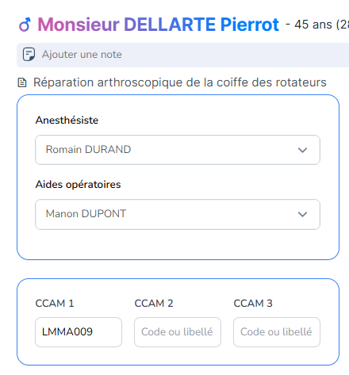
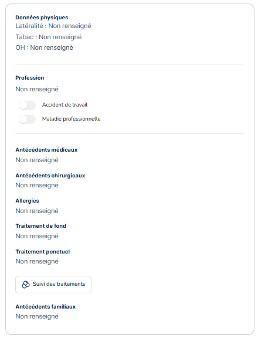
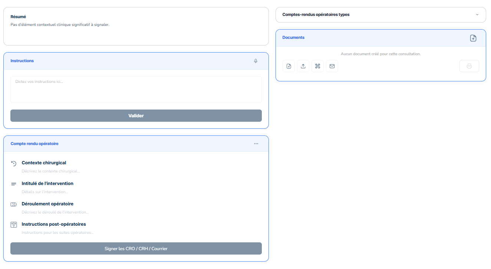
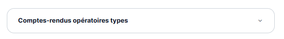
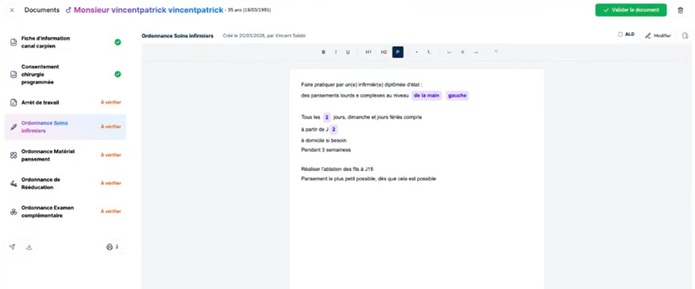

Evènement de bloc opératoire
Le module Bloc opératoire de MIA Experts Chirurgie permet de gérer l’ensemble du parcours opératoire d’un patient, depuis la planification de l’intervention jusqu’à la rédaction et la structuration du compte-rendu opératoire.
Il assure la continuité entre la consultation, l’organisation du bloc et la production des documents médicaux associés.
Entête et colonne latérale du Bloc opératoire
L’entête et la colonne latérale gauche sont très similaires à ceux présents dans la Consultation.
L’entête offre la vue synthétique du patient : l’identité du patient, l'âge, la date de naissance ainsi que le motif de l’intervention programmé. Il permet l’ajout d'une note accessible à plusieurs endroits dans le logiciel.
La colonne latérale gauche reprend les informations patient, les complète avec la liste des intervenants associés à l’opération, ainsi que le codage CCAM correspondant à l’acte chirurgical. Une recherche par libellé est disponible afin de faciliter l’identification du code approprié.


Instructions et compte rendu opératoire
Sur la partie centrale du Bloc opératoire apparaissent plusieurs sections :

- “Résumé” : Cette section affiche le résumé de la consultation préopératoire, produit automatiquement par l’IA à partir des données de la consultation précédente.
- “Instructions” : Des instructions peuvent être ajoutées si nécessaire en complément du résumé ou suite à la sélection d’un “compte-rendu opératoire type”. Elles peuvent être ajoutées par dictée vocale comme manuellement.
- “Comptes-rendus opératoires types” : Ce module propose une sélection de comptes rendus pré-enregistrés dans les paramètres. Ils sont associés à des chirurgies ou procédures spécifiques récurrentes.

Après sélection du modèle adapté, l'action « Appliquer à l'intervention » génère le compte rendu avec ses éléments fixes : les variables quant à elles, sont détectées automatiquement par rapport aux informations présentes dans le résumé et l’ajout d’une instruction. Le texte reste encore une fois entièrement modifiable par le praticien.
- “Compte rendu opératoire” : Le CRO est structuré afin de garantir une rédaction claire, standardisée et conforme aux pratiques chirurgicales. Les principales sections du compte-rendu incluent :
- le contexte chirurgical,
- l’intitulé de l’intervention,
- le déroulement opératoire,
- les instructions post-opératoires.
Il est alors généré à partir des éléments précédemment évoqués, les documents reliés à l’intervention se génèrent avec le bouton “génération intelligente”. Cela peut aussi être fait manuellement.
Lorsque le document est vérifié puis signé, il est alors intégré sur le module des document et reste modifiable jusqu'à sa validation définitive.
Le CRH (Compte rendu Hospitalier) est généré automatiquement à partir du CRO tout en restant modulaire. Le suites opératoires y sont reprises directement depuis le CRO.
- “Documents” : Le panneau droit regroupe l’ensemble des modules de documentation liés à l’intervention en cours. Voir la page Documents associés
